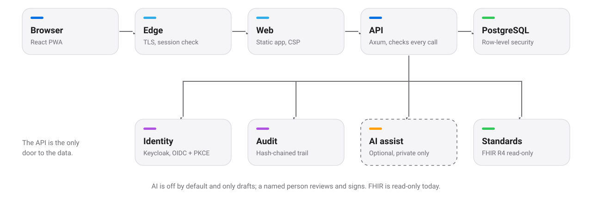
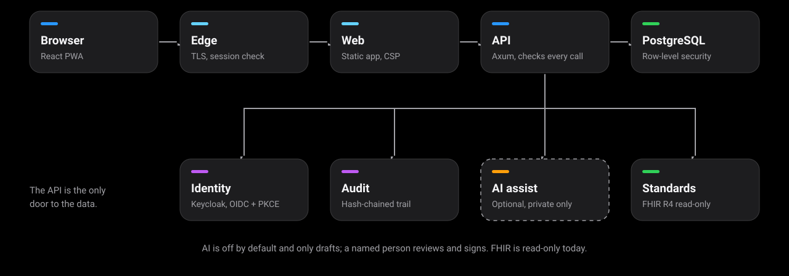

Deploy
Run it your way.
The same two container images, a Rust API and a web front end, on a laptop, a VM or a Kubernetes cluster.
Docker Compose
The quickest route: API, web, PostgreSQL and an optional edge. Run in a FluxVM virtual machine and used for the browser test suite.
Helm chart
Network policies, a migration job and PostgreSQL through CloudNativePG.
k3s with Keycloak and Envoy
Keycloak (Haven packaging) for sign-in, Envoy Gateway as the TLS edge with a session check, and CloudNativePG for the database.


Verified
What has actually been run.
Tested
- Docker Compose in a FluxVM VM.
- The Helm chart on a k3s node with Keycloak, Envoy Gateway and CloudNativePG.
- Sign-in, the session check and sign-out in Chrome through that edge.
- PostgreSQL 14 and 18 in the test matrix; 17 on k3s.
Not yet
- Load testing.
- Browsers other than Chrome.
- A multi-node, highly available cluster.
- Automated backups.
- Netra and Nuvora against live instances (tested against stand-ins).